First and Second flight stayed close
together during the hunt.
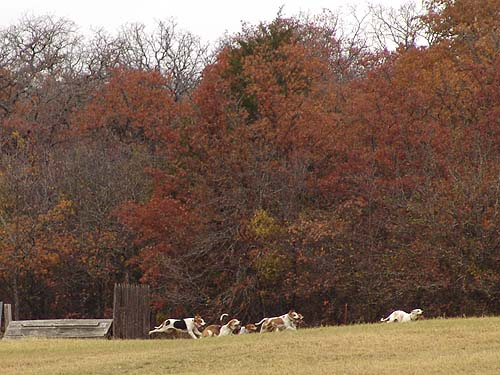
Breaking out of the woods, on a run.
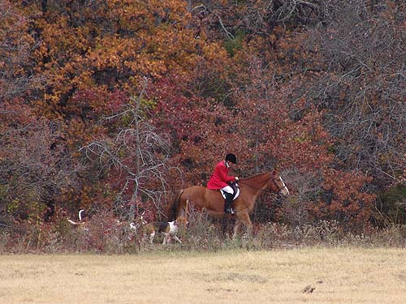
Hunting along the tree line.
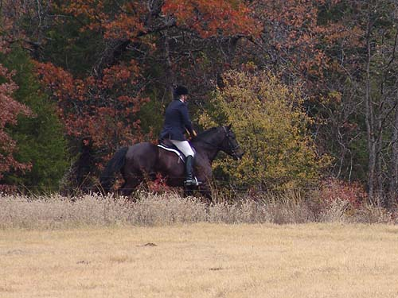
David and Othello were in First Flight.
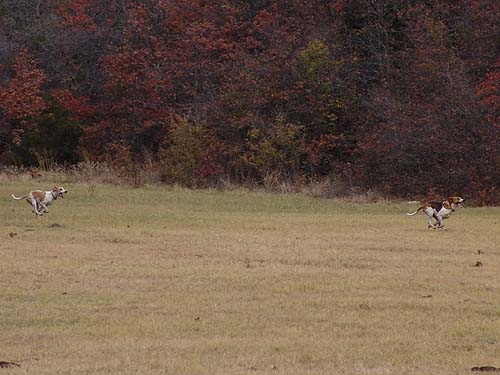
A couple of hounds running to catch
up.
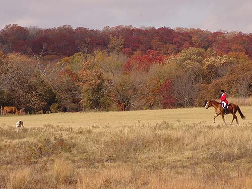
We were lucky to still have some fall
color.
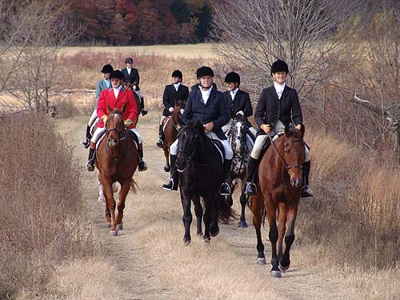
Sharon bringing the field in to the
tally ho wagon.
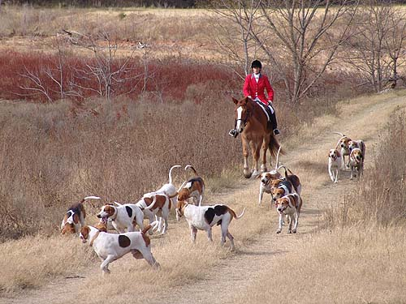
Bringing the hounds to water.
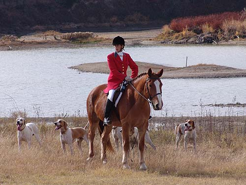
With sand bars showing, it's obvious
that our water levels are lower than they've been in years.
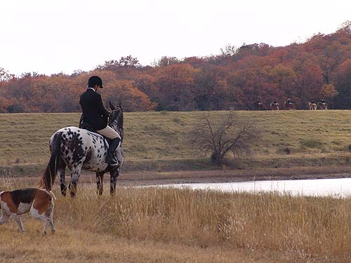
Melanie watching Third flight come
in.
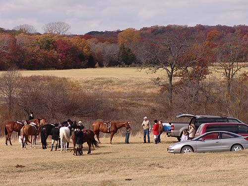
Gathered around for some hospitality.
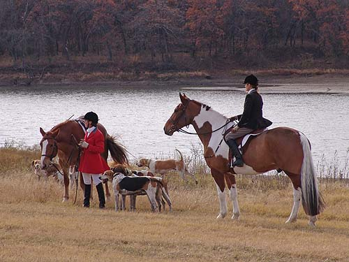
Chrissie and Mary Ann keeping watch.
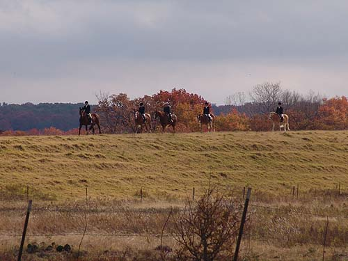
Third Flight on the horizon.
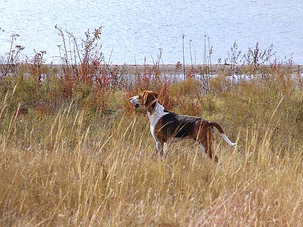
Eager to head out again.
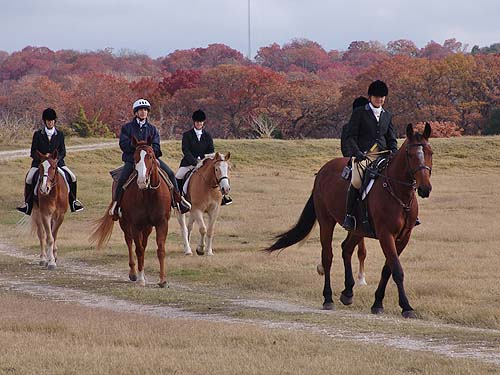
There were a number of 'green-to-hunting'
horses out for opening.
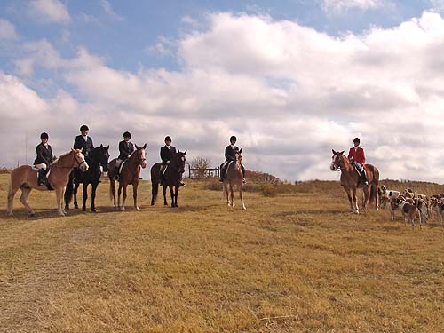
We gathered for a 'draft cross' shot
(not pictured, Shorty).
Katie on Niles, David on Othello, Jake
on Angel, Scott on Thuy, Jennifer on Mo and Chrissie on Thistle.